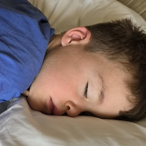
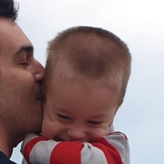
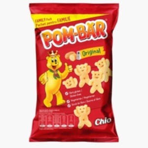

Fullscreen
Speak üó£Ô∏è
⌫
  
VREAU > sa mananc > ... > sa beau > .. > sa dorm > in brate > cada > la veceu > sa merg > sus > jos > afara > la mama > tata DA/SUPER NU STOP DOARE > cap, mana, picior, burta SIMT > trist, obosit, suparat, furios